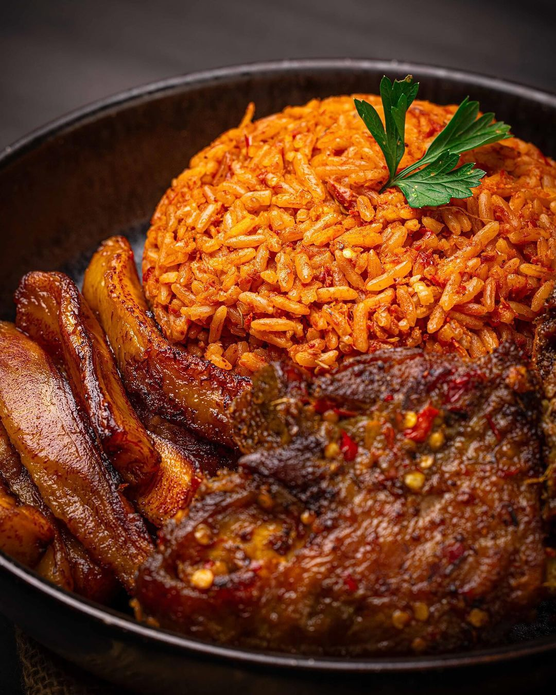

Main dishes
Smoky One-Pot Jollof Rice
A rich, tomato-and-pepper rice with a gentle smoky edge, cooked in a single pot so the grains soak up every drop of flavour.
Recipe by Azeez Abiodun, published

Jollof is a party staple across West Africa, and everyone has a strong opinion about how it should be made. This version keeps things simple: blend the base, fry it down until it deepens in colour, then let the rice steam gently until tender.
Recipe at a glance
| Detail | Value |
|---|---|
| Prep time | |
| Cook time | |
| Serves | 6 people |
| Difficulty | Easy |
Ingredients
For the pepper base
- 6 ripe plum tomatoes
- 3 red bell peppers (tatashe), deseeded
- 1 scotch bonnet pepper, or to taste
- 1 large onion, roughly chopped
For the rice
- 3 cups long-grain parboiled rice, rinsed
- 1/3 cup vegetable oil
- 2 tablespoons tomato paste
- 2 cups chicken or vegetable stock
- 2 bay leaves
- 1 teaspoon thyme
- 1 teaspoon curry powder
- Salt, to taste
Method
- Blend the tomatoes, bell peppers, scotch bonnet, and half the onion until smooth.
- Heat the oil in a heavy pot over medium heat. Fry the remaining sliced onion until golden, then stir in the tomato paste for 2 minutes.
- Add the blended base and cook for 25 to 30 minutes, stirring often, until the oil rises to the surface and the sauce darkens.
- Stir in the stock, bay leaves, thyme, curry powder, and salt. Bring to a simmer.
- Add the rinsed rice and stir once. Cover with foil and a tight lid, then cook on low heat for 25 minutes.
- Let the rice rest, covered, for 5 minutes. Fluff with a fork and serve hot.
Tip: for the smoky edge, leave the bottom layer of rice to toast for a few extra minutes before serving.
Nutrition facts
| Nutrient | Amount | % Daily value |
|---|---|---|
| Calories | 410 kcal | 20% |
| Total fat | 12 g | 15% |
| Carbohydrates | 66 g | 24% |
| Protein | 8 g | 16% |
| Sodium | 640 mg | 28% |
| Values are estimates and vary with ingredients used. | ||
Serving and storage
Serve with fried plantain, grilled chicken, or a simple cabbage salad. Leftovers keep in the fridge for up to three days; reheat with a splash of water. For more on rice safety, see the NHS guide to storing and reheating rice.